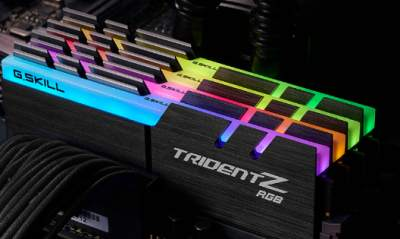
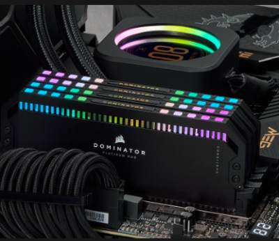
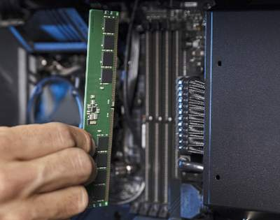

What is a RAM?

What is RAM?
RAM allows your computer to perform most of its everyday tasks, such as loading applications, browsing the internet, editing a spreadsheet, or experiencing the latest game. Memory also allows you to switch quickly among these tasks while also remembring where you are in each task. Generally speaking, the more memory you have the better for multitasking.
In a way, memory is like the top of your desk. it allows you ro work on various projects at once. the larger your desk, the more papers, folders, and tasks you can have out at one time. you cam quicly and easily access the information without having to thumb through a filing cabinet (your storage drive).

Why is RAM important?
The speed and performance of your system directly correlates to the amount of RAM you have installed. If your system fors not have enough RAM, it can be slow and sluggish, especially when you are trying to multitask or having several programs or apps open at the same time. If you requlary get frustrated by unresponsive programs, lagging load times, and generally slow computer, lack of RAM is properly to blame. There are ways to see if your computer needs more memory, and its easy to upgrade your desktop or laptop Ram yourself.
To prevent usere from installing incompayible memory, modules are physically different for each memory Technology generation. These physical differences are standard across the industry. so make sure toy buy memory compatible with your motherboard or other components.

What are the different types of RAM?
Computer RAM is a critical componenr in a computer system, providing volatile storage that the processor uses to temporarily store and access data quickly. There are several types of RAM, each with its quique characteristics and use cases.
Some examples of computer RAM are: Dynamic random access memory (DRAM), Static random access memory (SRAM), Synchronous dynamic random access memoey (SDRAM), Double data rate (GDDR) synchronous graphics random access memory.